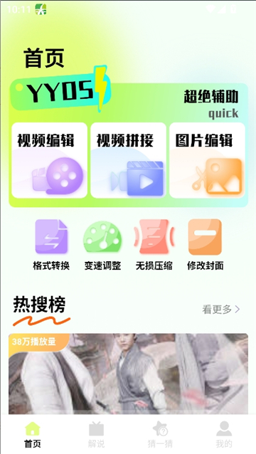
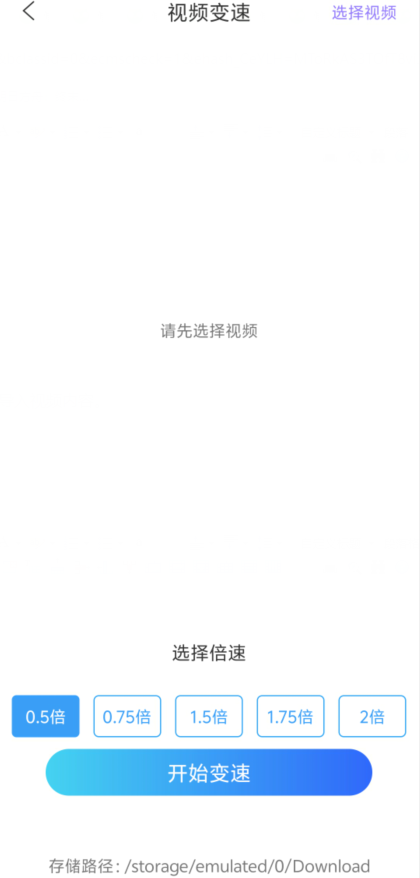

SeedHub 到底值不值得掏钱？一笔给影评重度玩家算清楚的账
SeedHub 是一款聚合影视内容、自带剪辑工具和影评社区的 Android 应用。免费版和付费版各给了什么？三类用户分别该花这笔钱还是忍着？用时间账代替价格标签算一遍。
我从官方下载拿了安装包用它快三个月了，刚打开的时候觉得"这不就是又一个影视 App"，现在每天睡前都在上面翻影评。但有个问题一直没绕开——它到底值不值得掏钱？ 免费版能不能凑合用？付费版那点钱花下去换了什么？
SeedHub 不是纯影视聚合播放器，它的官网把自己定位成「影视内容 + 剪辑工具 + 影评社区」的三位一体应用——它的定位有点怪：一边是内容流，首页给你推热门影片和影评；另一边是工具台，藏着变速、绿幕、格式转换一套剪辑工具；中间夹着一个影评社区，用户可以写短评、互动、发动态。三个东西揉在一个 App 里，这本身就是它的门槛——功能杂意味着每一块都不可能做到极致，也意味着它的付费策略得从三块里挖价值点。
定价拆解：免费版给什么，付费版多什么
素材里没有直接列出价格，但从应用内实际提供的功能边界可以把版本差异理清楚。
免费版能用的东西：
- 完整的内容流——首页热门、分类浏览、搜索都不锁；
- 基础观影功能——播放、倍速播放、清晰度切换正常；
- 七个剪辑工具台里的基础操作——变速调整、格式转换、简单裁剪都能用；
- 影评社区的浏览和发布——写短评、点赞、评论不收钱。
付费版多出的东西，从功能锁点看集中在三个方向——更细的参数说明可以去SeedHub文档翻：去广告、高级剪辑参数、社区增值权益。去广告这件事最直观——免费版在内容页和工具操作的间隙会插开屏或横幅广告，频率不算高但很打断节奏。高级剪辑这块，绿幕抠像的边缘曲线细调、多视频层合成的参数解锁、4K 素材的流畅导出，这些都是免费版要么锁死要么性能打折扣的地方。社区增值权益是最模糊的一块——有没有匿名身份、能不能置顶自己的影评、评论区的加权展示，这些得看应用内有没有明确的会员入口。
算账：三类用户分别该花还是不该花
我把用户分成三档来算，每档都问自己一个问题——免费版的天花板卡不卡我，以及付费后我每单位时间省了什么？
轻度用：偶尔刷片的人
每天打开 SeedHub 不超过 20 分钟，主要需求就是找片源、看剧、睡前翻两篇影评。免费版对这类用户来说几乎够用——内容流不锁，倍速能调到 2 倍，偶尔碰到的剪辑需求用基础裁剪也能凑。广告的存在感在这个强度下不会特别扎眼。结论：不用付。20 分钟的使用时长里，广告占掉的 30 秒不值得一个月几块钱。
主力用：影评从业者或认真写短评的人
每天至少一小时在 SeedHub 上，不只是看片——看完要写影评、要跟同好互动、偶尔要剪个片段发社交平台。这群人最纠结的点是：免费版的社区体验到底够不够用？ 如果你写的影评经常被同类内容淹掉，或者想发个绿幕合成的片段但边缘永远调不干净，那付费版的解锁项就开始切中痛点了。4K 素材导出在主力创作场景里也挺关键——免费版导出 1080p 还行，4K 会掉帧。

算时间账的话，假设付费版省掉你每天花在"调绿幕边缘""等广告加载""评论被刷下去"的时间是 15 分钟，一个月就是 7.5 小时。这 7.5 小时你拿去多写两篇影评或者多剪一个片段，值不值会员费？对认真做内容的人来说大概率值。结论：主力用户闭眼付。
重度用：一天五小时以上的"SeedHub 原生居民"
这类用户把 SeedHub 当成主阵地——视频来源在这里、创作工具在这里、社交关系也在这里。免费版对他们来说不是"够用"的问题，是能不能持续用下去的问题。广告频率在这个使用强度下会变成干扰源，社区权益的缺失会让自己的内容被埋没，高级剪辑工具的锁点会逼得人去找替代软件。我见过有人同时开着 SeedHub、剪映和两个影评 App——就是因为 SeedHub 免费版每一块都差一点，拼到一起用才勉强顺。
对重度用户来说，付费版的真正价值是把三件事（看片、剪辑、写评论）留在同一个 App 里。不用在 SeedHub 写好文案再复制到剪映剪片段再发回 SeedHub——这个流程里的每个"复制粘贴"都是摩擦。结论：重度用户必须付，而且越早付越省心，因为你用得越久，那个"在三个 App 之间来回跳"的时间成本累积得越快。

替代方案：不付这笔钱还有别的路吗
当然有，而且每一条都在不同场景下能"差不多"替代 SeedHub。
看片这件事，完全可以找纯聚合类 App 或者直接用浏览器找在线资源。SeedHub 在片源覆盖上不算独一档，甚至有些冷门片它还没有。但替代方案的代价是你要同时装两三个 App 或者收藏几个网站，找片成本变高。
剪辑这件事，剪映、必剪这些专业工具的能力比 SeedHub 强太多。但代价是要单独下载、单独登录、单独学习一套交互逻辑。如果你用 SeedHub 只是偶尔剪个变速片段，剪映的完整功能对你来说是过剩的负担。
影评这件事，豆瓣、IMDb 的社区体量更大、内容更深。但代价是 SeedHub 的影评是跟内容消费场景绑定的——刚看完一集直接在应用里就能写，这个即时性是独立社区很难比的。
替代方案的本质是"用拆分换免费"——你把 SeedHub 做的三件事拆给三个不同的工具，每一件都不用付钱，但每一件的场景衔接都有摩擦。要不要接受这个摩擦，是除了价格之外另一个值得想清楚的问题。
结论：你属于哪一档，三秒对号入座
最后再帮你收一下，三秒定位自己的付费决策：
- 每天开 SeedHub 不到 20 分钟 → 永远不用付，免费版绰绰有余；
- 每天开 1 小时以上、写影评或剪片段是常态 → 闭眼付，时间成本已经回票价；
- 每天 5 小时以上、三件事全在它上面做 → 必须付，免费版的摩擦会把你逼走；
- 介于中间的摇摆档 → 先忍两周免费版，等某次真的因为广告打断或者绿幕调不好而烦躁的时候再付——那时候你付的钱才是真的值。
说实话 SeedHub 的付费策略挺鸡贼的——它不是靠锁内容逼你付钱，而是靠"把三件事揉在一个 App 里"这个定位，让你一旦用顺手了就很难拆开来。你看，它值不值掏钱，本质上是在算"省下来的切换成本"和"付出去的会员费"哪个重。
如果你想深挖它的功能边界或者拿资料做二次整理，这套内容在GitHub、Gitee、GitCode上都有镜像仓库可以随便拉。